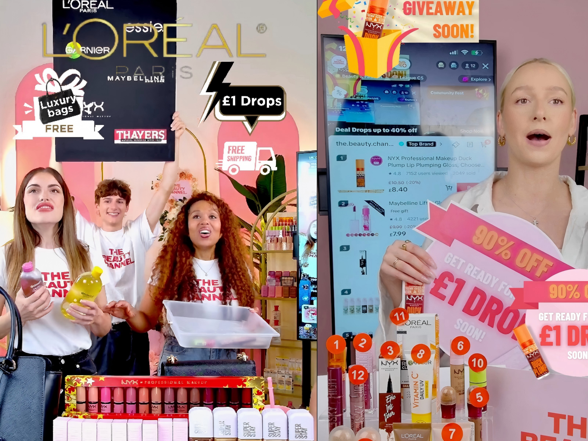
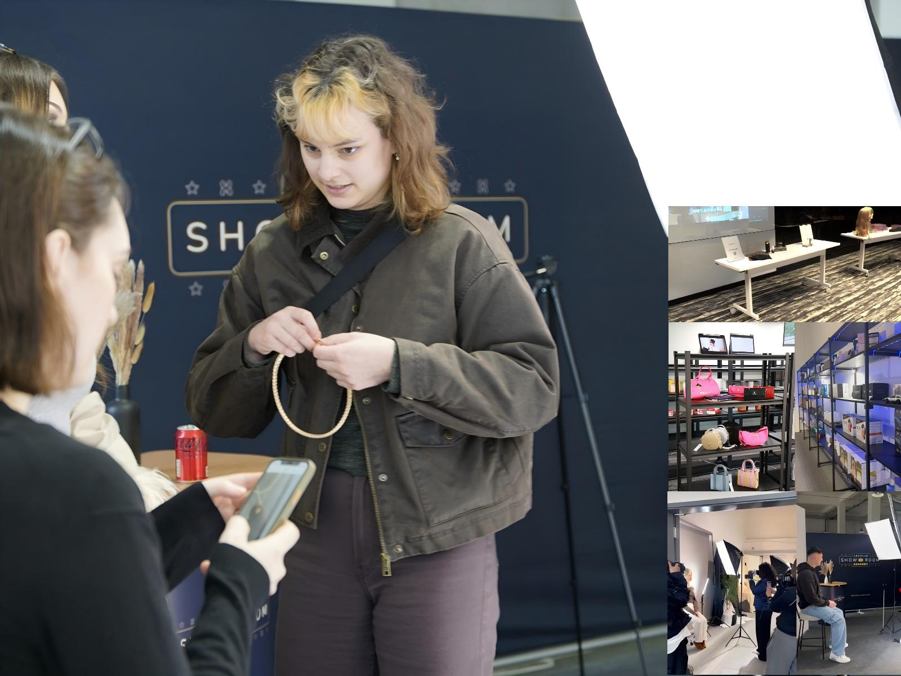
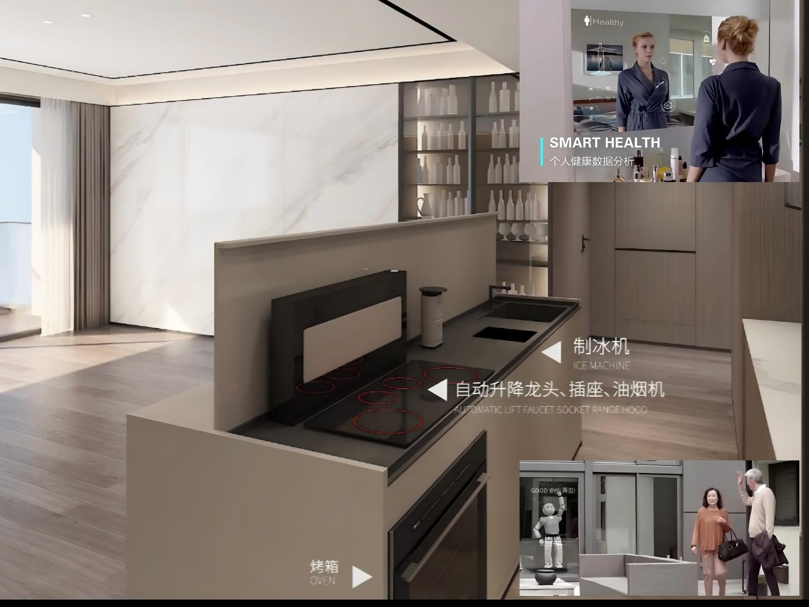

L’Oréal UK TikTok Shop Growth
TikTok Shop / Marketplace Growth
Supported end-to-end TikTok commerce operations including product listing, SKU selection, live planning, creator content, paid advertising, page optimisation, user experience, and performance monitoring. Helped scale L’Oréal UK TikTok Shop from zero to £230K monthly sales during the cold-start stage.

XAVVI Showroom & Merchant Activation
Merchant Onboarding / Commercial Operations
Led the commercial operation of XAVVI’s UK showroom business, covering brand acquisition, merchant onboarding, client relationship management, creator partnerships, online-to-offline traffic conversion, and campaign resource coordination. Supported a 100+ brand pipeline and differentiated activation for new, active, and high-potential partners.

AI Operations & AI Videos
Operations Insight / Content Workflow
Supported AI-related operational feedback loops by translating market-facing insights, campaign execution observations, and partner needs into more actionable improvements. This work sat alongside content creation coordination, resource planning, and platform-facing operational support within fast-moving projects.

Smart Home Product & Design Leadership
Product Development / Project Delivery
Led a 5-person team and managed annual project delivery worth approximately RMB 5 million, covering client requirements, proposal presentations, execution, and delivery control. Also supported smart-home product development from user research and market analysis to product definition, functional planning, and implementation.